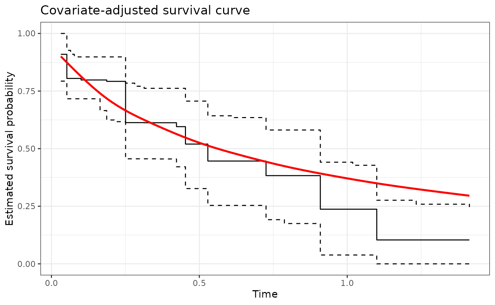

Covariate-adjusted survival curves with current status data
Source:vignettes/v5_current_status.Rmd
v5_current_status.Rmd
library(survML)
#> Loading required package: SuperLearner
#> Loading required package: nnls
#> Loading required package: gam
#> Loading required package: splines
#> Loading required package: foreach
#> Loaded gam 1.22-5
#> Super Learner
#> Version: 2.0-29
#> Package created on 2024-02-06
library(ggplot2)
library(dplyr)
#>
#> Attaching package: 'dplyr'
#> The following objects are masked from 'package:stats':
#>
#> filter, lag
#> The following objects are masked from 'package:base':
#>
#> intersect, setdiff, setequal, union
set.seed(102524)Introduction
Current status data arise in the analysis of time-to-event
variables when each study participant’s event status is observed at only
a single monitoring time. The current status sampling scheme represents
a particular form of interval censoring: each participant’s event time
is known to lie either between the event time support’s lower bound and
the monitoring time, or between the monitoring time and the even time
support’s upper bound. Traditional nonparametric methods for estimating
the event time distribution under current status sampling require
independence between the event time and the monitoring time, which may
be unrealistic. The function currstatCIR() implements a
nonparametric estimation approach that requires only conditional
independence between the event time and the monitoring times given
measured baseline covariates.
The method implemented in currstatCIR() is called
extended causal isotonic regression, or extended CIR for short,
due to its connection to the causal isotonic regression procedure
proposed by Westling et al. (2020). Specifically, estimation of a
survival function using current status data subject to
covariate-informed monitoring is analogous to estimation of a monotone
causal dose-response curve under covariate-induced confounding. Below,
we describe this method and provide an example analysis using simulated
data.
Current status data structure
Suppose we are interested in estimating the survival function of a time-to-event outcome . However, we do not directly observe ; rather, for each study participant, we observe a monitoring time and an indicator of whether or not is smaller than , denoted . In addition, we observe a baseline covariate vector . This data structure is commonly referred to as current status data, and it represents an extreme form of interval censoring.
The extended CIR method implemented in survML was
originally devised to analyze symptom survey data from a long COVID
study conducted at the University of Washington. Study participants who
tested positive for SARS-CoV-2 infection were sent an email survey 28
days after the positive test, and were queried for the presence of
persistent COVID-19 symptoms at the time of survey response. Because
participants could choose when to respond to the survey, there was
substantial variation in response time. In this example, the event time
represents the duration of COVID-19 symptoms after infection, and the
monitoring time
represents the number of days since the positive test at which a
participant chose to complete the survey. Baseline covariate information
included demographics (sex, age, etc.), preexisting comorbidities, and
characteristics of the participant’s acute infection (symptoms, viral
load, etc.)
One key complication of the long COVID study was survey nonresponse. By the time data collection ended, fewer than half of the surveyed individuals had responded to the email survey. We use to denote the time — measured since the positive test — at which follow-up ends for a study participant. In many cases, must be determined by the investigator. We consider a participant who has not responded to the survey by time to be a nonrespondent.
Because the long COVID data are not publicly available, in this
vignette, we will analyze a simple simulated dataset, generated below.
Note that both the event time
and monitoring time
depend on covariates
and
.
The maximum follow-up time
is set to 1.65, so both
and
are set to NA for individuals who have not responded by
that time.
# Simulate some current status data
n <- 250
x <- cbind(2*rbinom(n, size = 1, prob = 0.5)-1,
2*rbinom(n, size = 1, prob = 0.5)-1)
t <- rweibull(n,
shape = 0.75,
scale = exp(0.8*x[,1] - 0.4*x[,2]))
y <- rweibull(n,
shape = 0.75,
scale = exp(0.8*x[,1] - 0.4*x[,2]))
# Round y to nearest quantile of y, just so there aren't so many unique values
# This will speed computation in this example analysis
quants <- quantile(y, probs = seq(0, 1, by = 0.025), type = 1)
for (i in 1:length(y)){
y[i] <- quants[which.min(abs(y[i] - quants))]
}
delta <- as.numeric(t <= y)
dat <- data.frame(y = y, delta = delta, x1 = x[,1], x2 = x[,2])
dat$delta[dat$y > 1.65] <- NA
dat$y[dat$y > 1.65] <- NAExtended CIR method
Details of the extended method can be found in the corresponding manuscript (Wolock et al., 2025). In essence, the procedure consists of the steps outlined below. These steps involve two nuisance functions that must be estimated: (1) , the conditional mean of given and ; and (2) , a standardization of the conditional density of given . For those familiar with causal inference for continuous exposures, these two nuisance functions can be thought of as analogous to the outcome regression and (standardized) propensity score.
Extended CIR procedure:
Construct estimates and of and , respectively.
Construct pseudo-outcomes , defined pointwise as .
Regress these pseudo-outcomes against using isotonic regression.
The isotonic regression step requires the investigator to choose a region over which to perform the regression. We denote this region . The endpoints of this region should be chosen so that is larger than the lower bound of the support of , and so that is smaller than . Isotonic regression is known to perform poorly near the boundaries of the support of , so choosing and to lie slightly inside those boundaries (for example, at the 2.5th and 97.5th percentiles of the distribution of ) may be wise. More details are provided in the manuscript.
The currstatCIR() function uses
SuperLearner() to estimate
and haldensify() to estimate
.
Control parameters for these functions can be passed using the arguments
SL_control and HAL_control. The isotonic
regression bounds
are specified using the argument eval_region. The
n_eval_pts argument specifies the number of time points,
evenly spaced on the quantile scale of
,
at which to estimate the survival function.
Below, we analyze the simulated data using
currstatCIR(). The control parameters for nuisance function
estimate are chosen to speed computation for the purpose of this
illustration; in real data analyses it is generally advisable to use a
larger number of cross-validation folds and a larger
SuperLearner() library.
eval_region <- c(0.02, 1.5)
res <- currstatCIR(time = dat$y,
event = dat$delta,
X = dat[,3:4],
SL_control = list(SL.library = c("SL.mean", "SL.glm"),
V = 2),
HAL_control = list(n_bins = c(5),
grid_type = c("equal_mass", "equal_range"),
V = 2),
eval_region = eval_region,
n_eval_pts = 100)$primary_results
#> Warning in (function (X, Y, formula = NULL, X_unpenalized = NULL, max_degree = ifelse(ncol(X) >= : Some fit_control arguments are neither default nor glmnet/cv.glmnet arguments: n_folds;
#> They will be removed from fit_control
#> 20% of observations outside training support...predictions trimmed.We can plot the estimated survival function, along with a pointwise 95% confidence band, and compare it to the true survival function, shown below in red.
# use Monte Carlo to approximate the true survival function
n_test <- 5e5
x_test <- cbind(2*rbinom(n_test, size = 1, prob = 0.5)-1,
2*rbinom(n_test, size = 1, prob = 0.5)-1)
t_test <- rweibull(n_test,
shape = 0.75,
scale = exp(0.8*x_test[,1] - 0.4*x_test[,2]))
S0 <- function(x){
return(mean(t_test > x))
}
other_data <- data.frame(t = seq(min(res$t), max(res$t), length.out = 1000))
other_data$y <- apply(as.matrix(other_data$t), MARGIN = 1, FUN = S0)
# plot the results
p1 <- ggplot(data = res, aes(x = t)) +
geom_step(aes(y = S_hat_est)) +
geom_step(aes(y = S_hat_cil), linetype = "dashed") +
geom_step(aes(y = S_hat_ciu), linetype = "dashed") +
geom_smooth(data = other_data, aes(x = t, y = y), color = "red") +
theme_bw() +
ylab("Estimated survival probability") +
xlab("Time") +
scale_y_continuous(limits = c(0, 1)) +
ggtitle("Covariate-adjusted survival curve")
p1
#> `geom_smooth()` using method = 'gam' and formula = 'y ~ s(x, bs = "cs")'
References
For details of extended CIR, please see the following paper:
Charles J. Wolock, Susan Jacob, Julia C. Bennett, Anna Elias-Warren, Jessica O’Hanlon, Avi Kenny, Nicholas P. Jewell, Andrea Rotnitzky, Stephen R. Cole, Ana A. Weil, Helen Y. Chu and Marco Carone. “Investigating symptom duration using current status data: a case study of post-acute COVID-19 syndrome.” Epidemiology (2025).
Other references:
Ted Westling, Peter Gilbert and Marco Carone. “Causal isotonic regression.” Journal of the Royal Statistical Society Series B: Statistical Methodology (2020).
Mark J. van der Laan, Eric C. Polley and Alan E. Hubbard. “Super learner.” Statistical Applications in Genetics and Molecular Biology (2007).
Nima S. Hejazi, Mark J. van der Laan and David Benkeser. “haldensify: Highly adaptive lasso conditional density estimation in R.” The Journal of Open Source Software (2022).